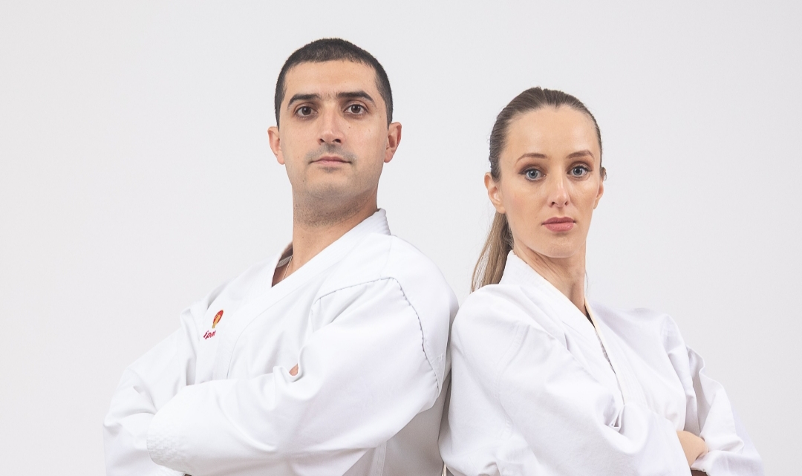
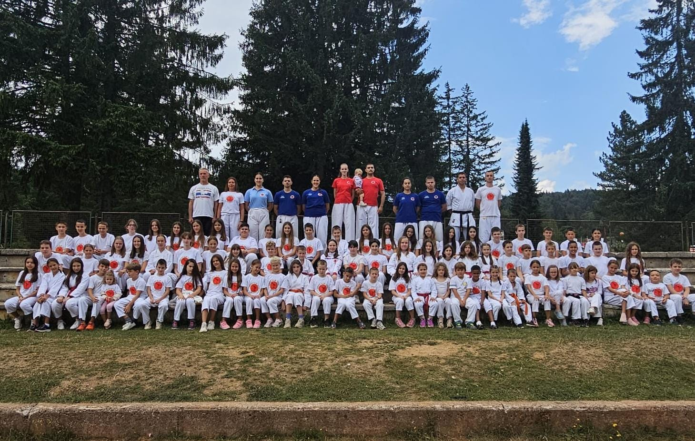
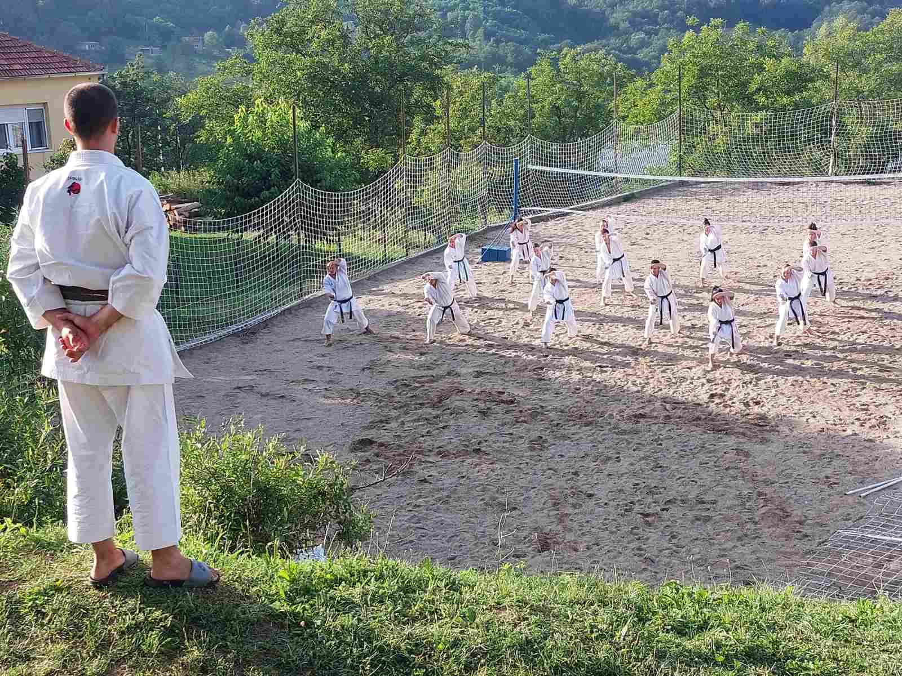
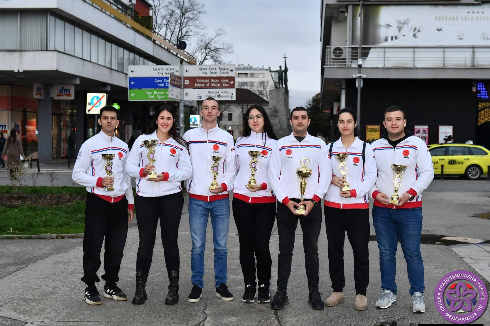
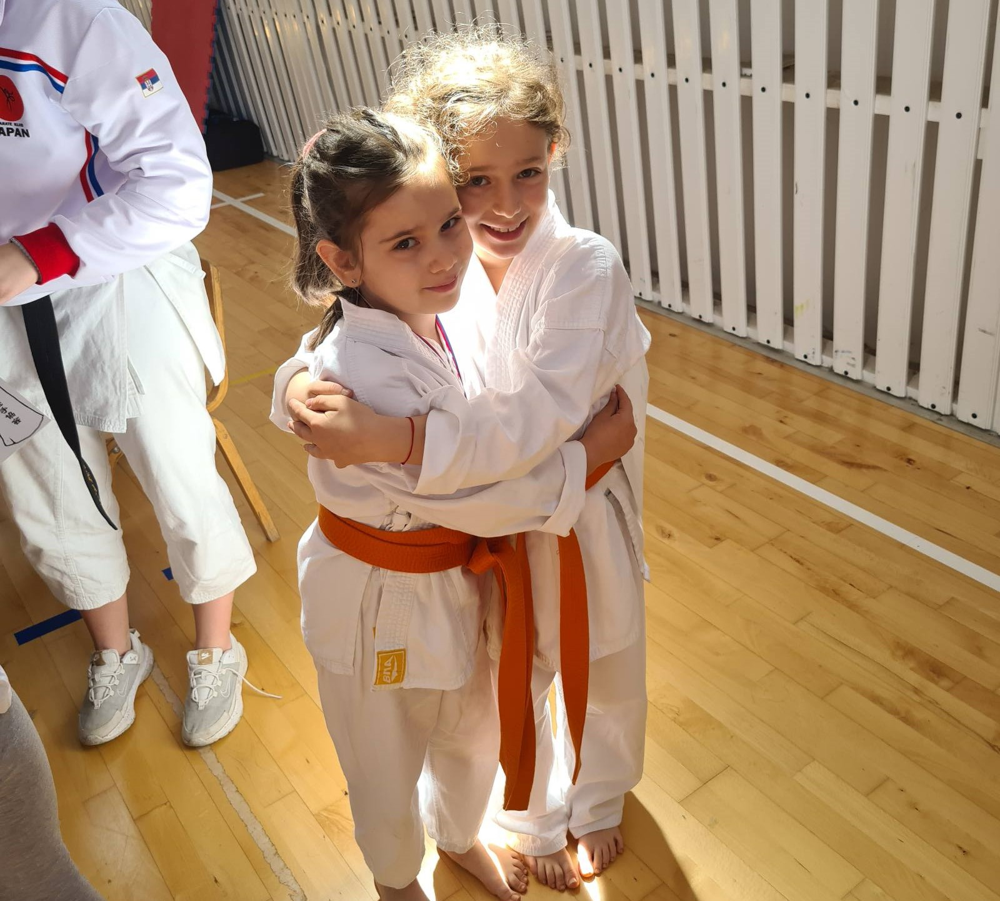
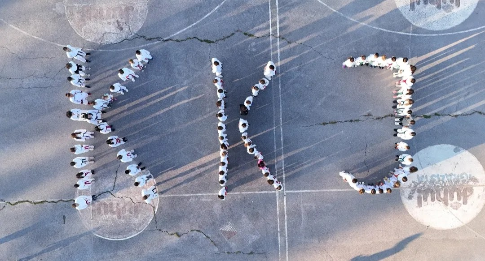

Hrabrost, čast, kvalitet
Karate klub „Japan“ iz Beograda već više od 30 godina uspešno se bavi edukacijom dece i mladih kroz karate, razvijajući ne samo vrhunske sportiste, već pre svega zdrave, disciplinovane i samopouzdane ljude. Tokom dugogodišnjeg rada, klub je iznedrio veliki broj evropskih i svetskih šampiona, reprezentativaca, ali i generacije dece koja su kroz karate stekla radne navike, samopouzdanje i prave životne vrednosti.
Naš cilj od samog osnivanja je jasan – da kroz kvalitetan i stručan rad, karate postane sredstvo za razvoj kompletne ličnosti deteta. Karate kod nas nije samo sport, već sistem koji razvija disciplinu, poštovanje, fokus i karakter.

Karate klub Japan prepoznat je po svom jedinstvenom sistemu treninga koji se razvija i usavršava decenijama. Treninzi se sprovode po jasno definisanom programu koji garantuje:
Posebna pažnja posvećena je radu sa najmlađima, gde se kroz igru, edukaciju i osnovne motoričke vežbe razvijaju zdrave navike, koordinacija i ljubav prema sportu.

Naš stručni tim čini kombinacija iskusnih trenera i mladih, energičnih instruktora/asistenata koji su aktivni i bivši takmičari.
Svi treneri su majstori karatea, vole rad sa decom i deo su sistema koji garantuje kvalitet treninga.
Rad u svim grupama odvija se uz stalni stručni nadzor i jasno definisane standarde, što obezbeđuje sigurnost i visok kvalitet treninga u svakoj sekciji.

Karate klub Japan je jedan od najuspešnijih karate klubova u Srbiji i regionu. Klub se izdvaja po tome što karate izučava u celosti, kroz više stilova i pristupa, tretirajući ga kao jedinstvenu veštinu.
Ovakav sistem rada dao je vrhunske rezultate, potvrđene brojnim medaljama na domaćim i međunarodnim takmičenjima, uključujući evropska i svetska prvenstva.

Naša najveća vrednost nisu samo medalje, već deca koja izrastaju u odgovorne, disciplinovane i samopouzdane ljude. Verujemo da je karate jedan od najboljih načina da dete razvije zdrave navike i stabilan karakter koji će mu koristiti tokom celog života.

Slava i zaštitnik kluba je Sveti Vasilije Ostroški, što dodatno govori o vrednostima koje negujemo – poštovanje, čast i zajedništvo.
Profesor fizičkog vaspitanja i sporta, selektor reprezentacije, višestruki svetski i evropski šampion. Kao trener i šef stručnog štaba Karate kluba Japan, godinama razvija sistem rada kroz koji su prošle generacije uspešnih sportista i dece koja su izgradila disciplinu, samopouzdanje i zdrave životne navike.
Autor je stručnih radova iz oblasti sportske nauke i karatea, predavač na seminarima i mentor mladim trenerima. Njegov rad danas predstavlja temelj metodike i sistema treninga u klubu.
Predsednik Karate kluba Japan i dugogodišnji trener sa bogatim takmičarskim i organizacionim iskustvom. Osvajač medalja na svetskim i međunarodnim takmičenjima, aktivno učestvuje u razvoju takmičarskog sistema i organizaciji brojnih karate događaja.
U radu sa decom i takmičarima fokusirana je na pravilan razvoj, tehniku, disciplinu i individualni pristup svakom članu.
Svi treninzi se odvijaju uz stručni nadzor, jedinstvene i jasno definisane programe. Na ovaj način obezbeđujemo da svako dete, bez obzira na lokaciju ili grupu, dobije isti kvalitet rada.
Naš cilj nije samo stvaranje vrhunskih sportista, već pre svega razvoj dece u stabilne, samopouzdane i disciplinovane ljude.
Budite zdravi i srećni – vežbajte sa nama!